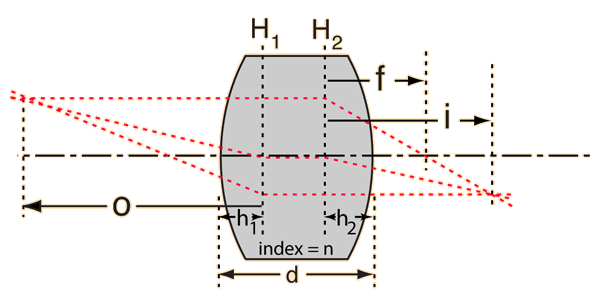

Additional background¶
Correcting for thick lenses¶
The Lens Maker’s equation given in the Background section is the result of a thin lens approximation where the thickness \(t\) of the lens is very small in comparision to the radius of curvature. When the lens is not thin, it becomes necessary to consider the original equation (Hecht 5th ed. Eqn 5.14),
Again, this expression assumes that the lenses are in air. It is important to note the additional term and how it scales with the thickess of the lens.
Principal planes¶
The principal planes are two hypothetical planes (one for each surface) in a lens at which all the refraction can be considered to happen. For a thin bi-convex lens, the two planes lie on the central plane bisecting the lens. For a thick lens this is not so,

Note that the focal length is measured from the principle planes! The distance from the vertexes to the nearest principal plane (derived at the beginning of Chapter 6 of Hecht 5th ed.) are given by,
Focal length of two thin lens systems¶
The focal length of an optical system consisting of two thin lenses is related to the focal length of each of the lenses as follows,
where \(d\) is the distance of separation between the lenses (distance between the centers of the lenses).
Thin lens equation but for thick lenses?¶
The thin lens equation given in the Background section cannot be used directly to find images formed by thick lenses. More on methods for finding the image formed by thick lenses can be read about here (HyperPhysics).
Diverging lenses¶
It may prove beneficial to explore diverging lenses in the Image from a Diverging Lens Physlet.